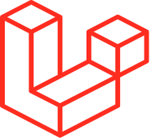

Halo
Anita Silvi Ferdina
Web Developer
Mahasiswa D3 Teknik Informatika di Politeknik Elektronika Negeri Surabaya. Saya tertarik dalam pengembangan website yang berfokus pada Backend.

Web Developer & Software Quality Assurance
Trustmedis Healthtech SolutionMagang Selama 6 Bulan sebagai Web developer dan QA. Berkontribusi dalam pembuatan website penggajian karyawan dan company profile serta melakukan testing untuk mencari bug pada website
2018 - 2019Web Developer
CraftstoreDalam tugas akhir saya, saya membuat sebuah aplikasi berbasis website yaitu CraftStore. Aplikasi ini merupakan sebuah Web ecommerce, untuk penjualan kerajinan yang memiliki tujuan untuk memudahkan seseorang dalam melakukan pembelian barang kerajinan dan dapat diakses oleh semua kalangan masyarakat
2020Backend Developer
HIMIT PENSBerperan aktif dalam tim yang mengembangkan sebuah sistem e-voting untuk pemilihan Ketua Himpunan Mahasiswa (KAHIMA) dan Wakil Ketua Himpunan Mahasiswa (WAKAHIMA) di Jurusan Teknik Informatika. Sistem ini digunakan oleh seluruh mahasiswa Jurusan Teknik Informatika untuk memilih kandidat terbaik
2021Web Developer
WPPLBerperan aktif pada tim dalam pengembangan aplikasi Cameris berbasis website untuk memudahkan pengguna dalam membandingkan lebih dari 2 kamera sekaligus, serta memberikan informasi kamera yang jelas dan akurat untuk memenuhi mata kuliah Workshop Pengembangan Perangkat Lunak menggunakan metodologi agile/scrum selama 3 bulan.
2022 - 2023Backend Developer
PT. Otak KananMagang Selama 6 Bulan sebagai Backend Developer. Berkontribusi dalam pembuatan API untuk Aplikasi Absensi dan Project Management
Juli 2023 - Desember 2023Rekayasa Perangkat Lunak
SMKN 1 SurabayaTugas Akhir saya pada waktu SMK yaitu pembuatan e-commerce aplikasi berbasis website yaitu CraftStore.
2017 - 2020SMK KODING
SMKN 1 SurabayaPelatihan gratis yang dirancang khusus bagi siswa SMK jurusan Rekayasa Perangkat Lunak. Tugas akhir selesai mengikuti pelatihan ini yaitu pembuatan catalog film berbasis mobile menggunakan kotlin
2018D3 Teknik Informatika
Politeknik Elektronika Negeri SurabayaKampus Jl. Raya ITS, Keputih, Kec. Sukolilo, Surabaya, Jawa Timur 60111
Agustus 2021 - Agustus 2024